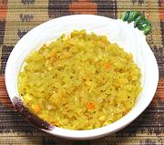

|
Green Papaya ChutneyEast Africa, Tanzania - Achali ya Papai Bichi | ||||
| Makes: Effort: Sched: DoAhead: |
1-1/2 cup *** 50 min Yes |
This chutney is similar to some made in India, but not as chili hot as those often are. In Tanzania, it is served with many dishes and snacks. | |||
|
8 2 ------- 1/4 2 2 1/2 1 1/2 1/2 1/2 ------- 1-1/2 2 1 3 |
oz oz --- in cl t t t t t --- T T T T |
Papaya, unripe (1) Onion -- Seasonings Ginger root Garlic Habaneros (2) Cumin Seed Sea Salt Pepper, black Sugar Turmeric ------------ Oil Olive Oil ExtV Lime Juice Lime Juice (more) |
Prep - (37 min)
|